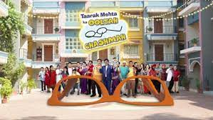

Popularly known as TMKOC, is a Hindi sitcom based on the weekly column "Duniya Ne Undha Chasma" by Taarak Mehta in Chitralekha magazine. It is produced by Asit Kumar Modi. It premiered on 28 July 2008 and airs on Sony SAB and is also digitally available on SonyLIV.
To know more about tmkoc visit the site
www.tmkoc.com